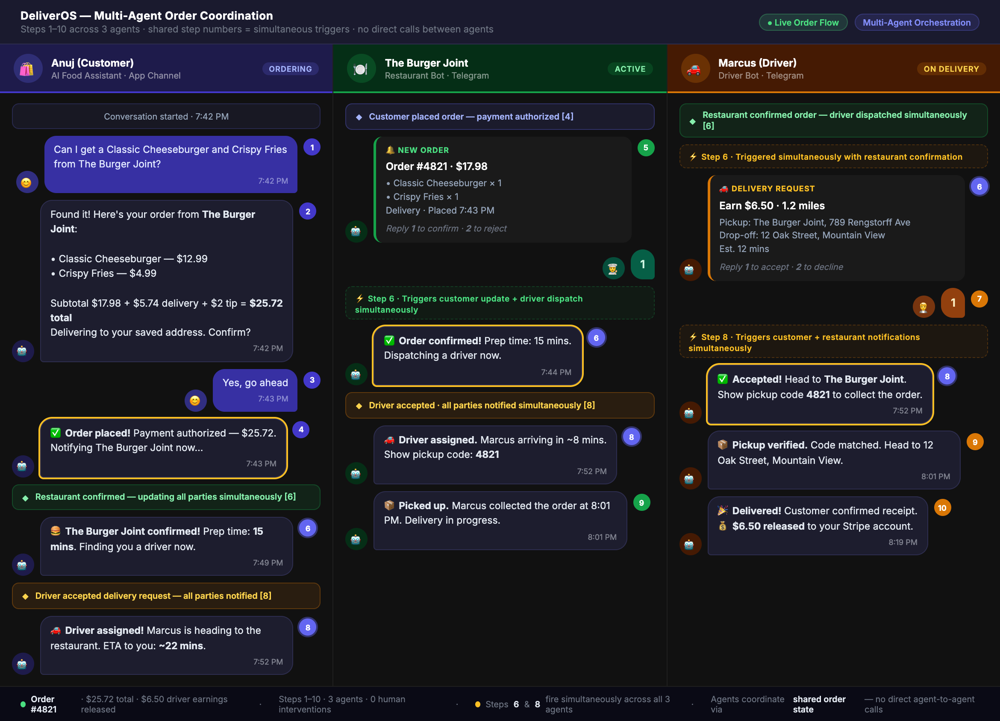
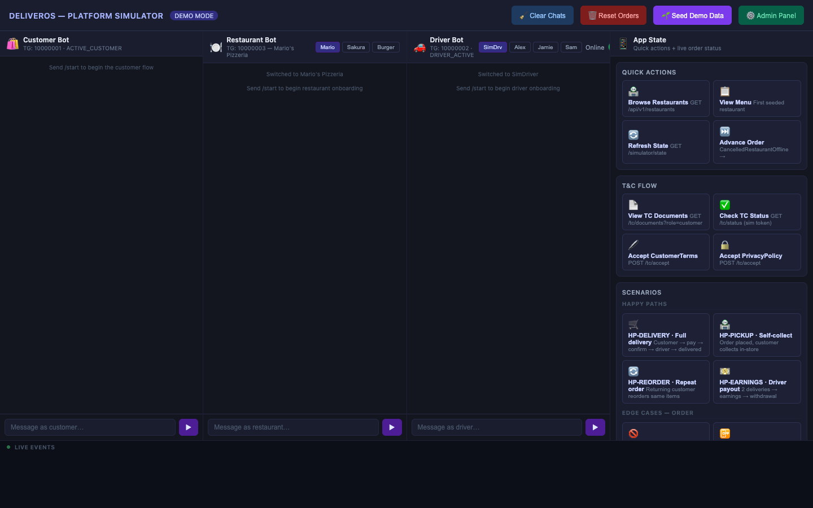
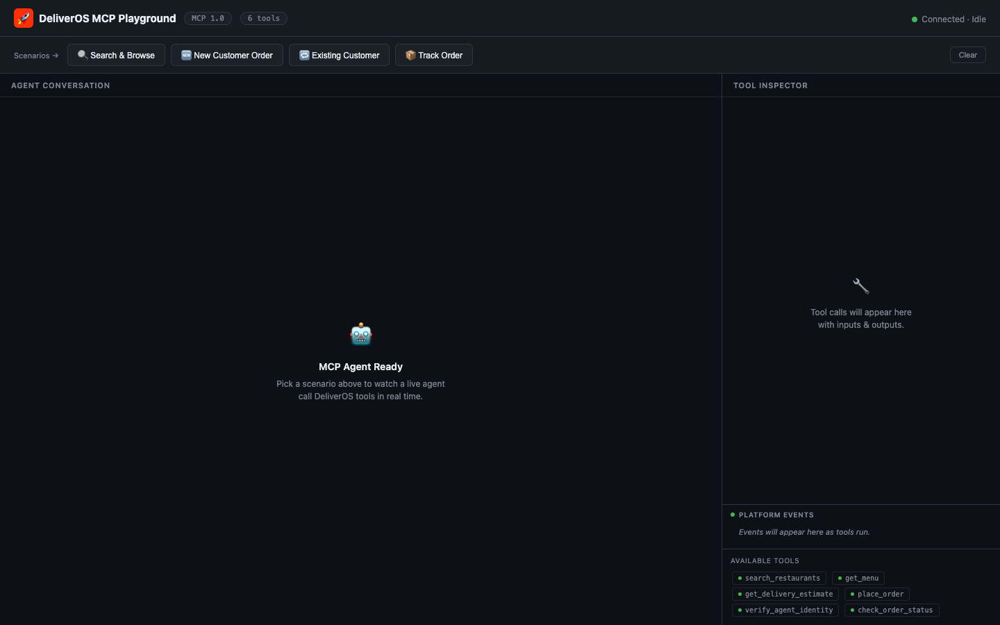
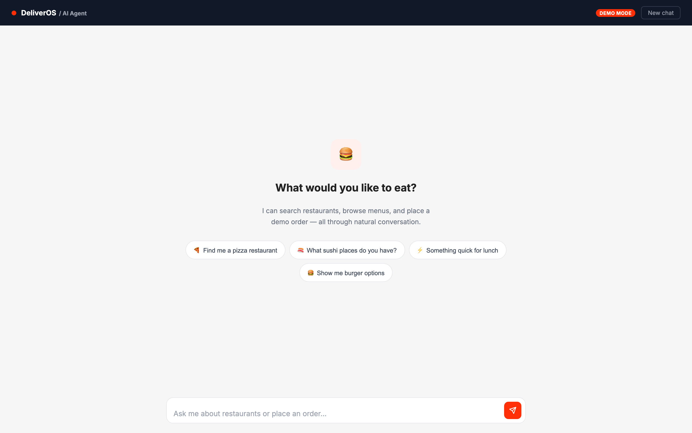

🔄
Cross-Channel Consistency
One order state machine. Five channels. Zero sync code.
5 Live Channels
Shared Identity
Real Screenshots
Every user — customer, restaurant, driver — interacts through their preferred channel. Telegram bots, the mobile app, the web admin portal, the MCP API, and the AI agent chat all feed into one shared order state machine. An action in one channel instantly reflects in all others. There is no sync layer, no ETL, no eventual consistency — because the data was never separate.
Five Channels — One Platform
📱
Telegram Bots
Customer · Restaurant · Driver
Natural language
Live order push
📲
Mobile App
Customer · Restaurant · Driver
React Native
iOS + Android
🌐
Web Portals
Restaurant · Driver · Admin
Full dashboard
Order override
🔌
MCP API
External AI agents
6 MCP tools
OTP identity gate
🤖
AI Agent Chat
Customer (web)
Conversational UI
Same pipeline
The Shared Order State Machine
📦 Every channel updates the same 20+ state machine. No copies, no sync.
AwaitingPayment
→
PaymentAuthorized
→
RestaurantNotified
→
BeingPrepared
→
FindingDriver
→
DriverAssigned
→
DriverEnRoute
→
DriverAtRestaurant
→
CodeVerified
→
InTransit
→
Arrived
→
Delivered
→
Completed
Colour key:
Customer-driven states
Restaurant-driven states
Driver-driven states
System-driven states
— all written to the same Supabase row by whichever channel acts first
Cross-Channel Consistency — Real Screenshots
📱 Telegram — Three Bots, Simultaneous

One order, three Telegram conversations, zero coordination code. The customer messages the customer bot (left). Steps 6 and 8 fire simultaneously to the restaurant bot (centre) and driver bot (right). Each bot sees only its own conversation thread — the shared state machine connects them. When the restaurant confirms, the driver queue opens. When the driver accepts, the customer sees "DriverAssigned" in real time. No webhook chaining, no polling.
🌐 Web Simulator — All Channels Live

The platform simulator proves cross-channel consistency. The web simulator shows all three Telegram bot panels side-by-side alongside the web admin panel. A message sent to the customer panel flows into the restaurant and driver panels in milliseconds. No page refresh, no separate state — all panels subscribe to the same Supabase real-time feed. Used during development to verify that every state transition arrives in the right panels at the right time.
🔌 MCP — External Agent, Same Pipeline

The fourth channel joins the same order pipeline. An external AI agent calls place_order via MCP. The resulting order appears in the restaurant's Telegram bot instantly — the same notification the bot receives from a mobile app order. The admin portal shows the order in its live feed. The MCP agent can call check_order_status and get the same real-time state any other channel reads.
🤖 AI Agent Chat — Fifth Channel

Conversational ordering, same shared identity. A customer registered via Telegram can log in to the AI agent chat with their email, and their saved address and order history are immediately available — no re-registration. An order placed here fires the same restaurant notification and appears in the driver queue. The agent chat resolves the customer's profile from the shared Users table the same way all other channels do: by email hash.
Shared Identity — What Travels Across Channels
| Data |
Telegram |
Mobile App |
Web Portal |
MCP API |
AI Agent Chat |
| Customer profile |
✓ |
✓ |
✓ |
✓ |
✓ |
| Saved delivery address |
✓ |
✓ |
✓ |
✓ |
✓ |
| Stripe saved card |
✓ |
✓ |
— |
✓ |
✓ |
| Order history |
✓ |
✓ |
✓ |
✓ |
✓ |
| T&C acceptance |
✓ |
✓ |
✓ |
✓ |
✓ |
| Live order state |
✓ |
✓ |
✓ |
✓ |
✓ |
| Re-registration required? |
✗ |
✗ |
✗ |
✗ |
✗ |
By the Numbers
5
Channels sharing one state machine
0
Sync layers between channels
1
Registration for all 5 channels
1
Supabase row per order, all channels read it
Key Product Decisions That Made This Work
🆔 Single identity layer — email as the cross-channel key
Every user signs up once. Whether they first register via Telegram, the mobile app, or MCP, a SHA-256 hash of their email is stored in the Users table and used as the lookup key in every subsequent channel. No secondary registration, no profile merge, no account linking flow needed. Telegram's channelUserId and the app's JWT both resolve to the same Users row via email hash.
📋 Shared state machine with per-channel notification triggers
The order state machine lives in the database. Every channel writes to the same Orders.Status column. State transition handlers — written in the order watchdog service — fire the appropriate notification to the next actor's channel. When the restaurant confirms via Telegram, the same handler fires a driver assignment notification as it would if the confirmation came from the web portal or admin override.
🔒 MCP identity security without blocking the happy path
Adding an agent-accessible API created a new attack surface: a malicious agent with a victim's email could place orders and charge their saved card. The OTP gate for existing customers closes this without adding friction for new customers (who have nothing to protect yet). The 15-minute JWT expiry means a captured token can't be replayed hours later. The double-call pattern (trigger OTP → verify OTP → receive token) keeps the token off the wire until it's verified.
🏗️ Channel adapters with a shared SMF message format
Each channel (Telegram, web, MCP) translates incoming messages into a Standard Message Format before routing to an agent. The agents themselves are channel-agnostic — they receive an SMF and return a response. This means adding a sixth channel (WhatsApp, voice, email) requires writing a new adapter, not modifying any agent. The shared message format is the reason cross-channel identity works: the router extracts the user ID the same way regardless of which channel the message arrived from.
Why cross-channel consistency is a product problem, not a technical one
Most platforms treat each channel as a separate product: the app team, the Telegram bot team, the web portal team each build their own state, their own user lookup, and their own notification system. Users who move between channels hit walls — re-registration screens, missing order history, "your cart isn't synced" messages.
DeliverOS was designed from the start with the assumption that the same user will use multiple channels. A restaurant owner might onboard via Telegram and manage their menu via the web portal. A customer might place their first order via Telegram and later switch to the app. An enterprise customer might route orders through MCP while their human staff monitors the web admin panel. The data model — one Users table, one Orders table, one state machine — makes all of this work without a single line of sync code.